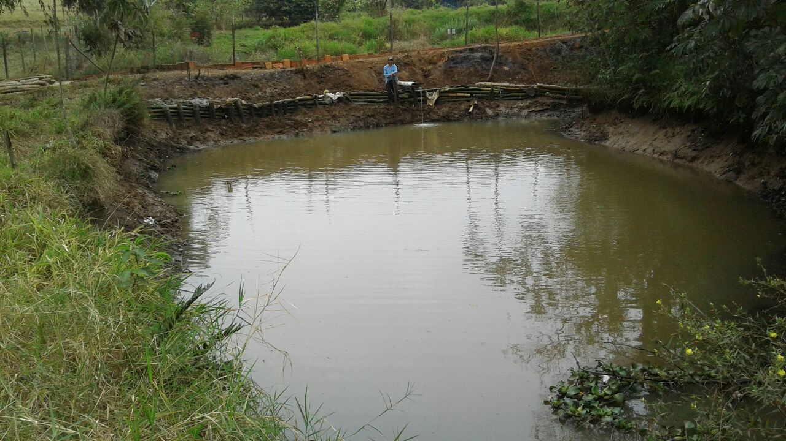

Tipos de tanques para piscicultura
- Viveiro: Açude; considerado "natural" por reproduzir as condições em que os peixes naturalmente vivem. Pode ser construído com
sistema de barragem ou sistema de derivação (escavado em terreno
natural mas abastecido com água controlada).
- Tanque: É bastante semelhante ao viveiro, mas a estrutura é revestida com alvenaria de pedra, concreto ou tijolo. A principal diferença é
que a estrutura é menor que a dos viveiros e o abastecimento é sempre por derivação – nascente, canal ou bombeamento.